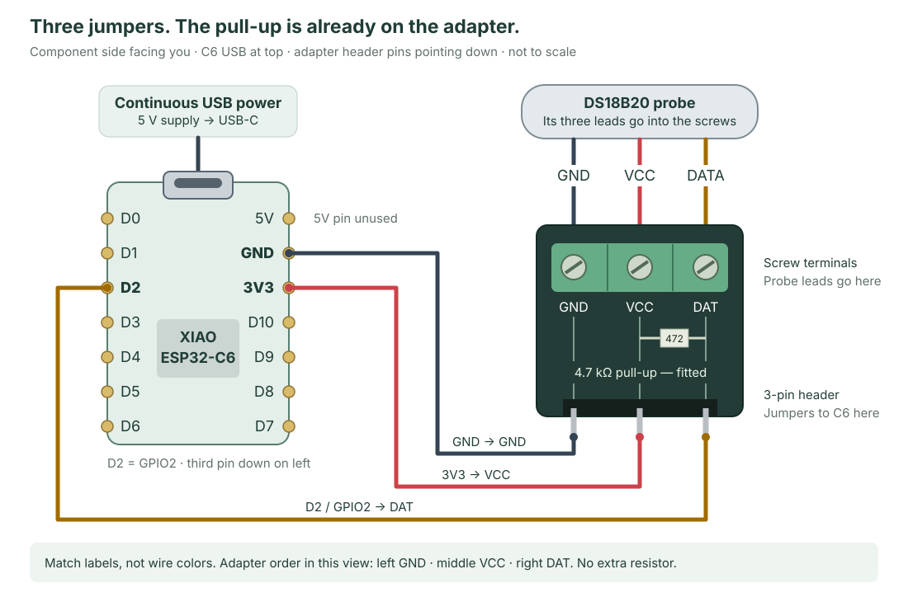
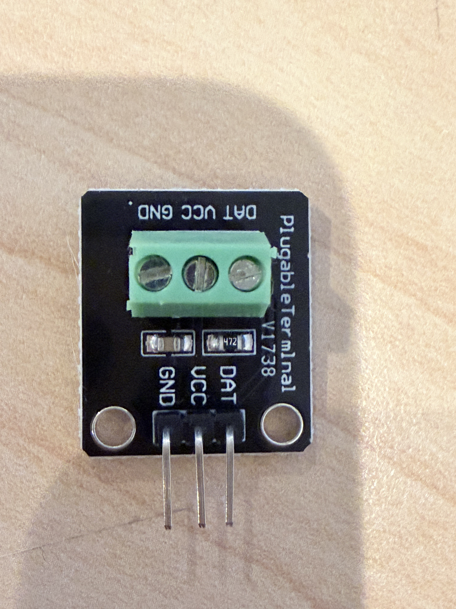

USB temperature sensor · Wiring guide
Use the adapter that came with the probe.
Connect three jumpers from the XIAO ESP32-C6 to the adapter, then clamp the probe’s three leads into its screw terminals. Power the C6 through USB-C.
Built-in 4.7 kΩ pull-up · No separate resistor
Front/component-side view. The adapter is drawn with its green screw block at the top and its three header pins pointing down, matching the photo below. On a phone, swipe the diagram sideways or open it full-size.
The three jumper wires
| C6 pin | Adapter header |
|---|---|
| GND Right side, second from top | GND Left pin in the shown view |
| 3V3 Right side, third from top | VCC Middle pin |
| D2 / GPIO2 Left side, third from top | DAT Right pin in the shown view |
Keep USB at the top when counting C6 pins. Look at the component side, not the underside.
The adapter and probe use 3.3 V from 3V3. Leave the C6’s 5V pin, D0 and underside battery pads unused.
Connect the probe to the screws
Probe ground → GND; probe supply → VCC; probe data → DAT.
Common probe colors are black / red / yellow respectively, but confirm the supplied probe’s labels or pinout. Diagram colors identify signals; they do not establish your cable’s wire assignment.
Your supplied adapter
The resistor marked “472” is the pull-up.
This is the PluggableTerminal V1738 adapter from your earlier hardware photos. The fitted 472 component is 4.7 kΩ between VCC and DAT.
It holds the data line high when the sensor is idle. It is called a pull-up resistor; it does not step up the voltage.
Header pins pointing down:
Left GND · middle VCC · right DAT.
The matching screw-terminal order is the same in this view. The printed terminal labels may be upside down—follow the signal labels.
Quick check, with all power disconnected
Measure between adapter DAT and VCC. Approximately 4.7 kΩ confirms the fitted pull-up. Leave the loose resistor aside.
If the new adapter differs from this photo, follow its own GND/VCC/DAT markings rather than copying the left-to-right order.


Connect and check
- Unplug USB. Solder the C6 headers if needed; make all connections with power removed.
- Clamp the probe leads in the adapter’s matching screw terminals. Keep stray strands out of adjacent terminals.
- Fit the three jumpers listed above. For direct header-to-header connections, use female-to-female jumpers on soldered male headers; a breadboard is also fine.
- Check the connections. Confirm each jumper end-to-end and check for a direct short between 3V3 and GND. DAT-to-VCC resistance is intentional because of the fitted pull-up.
- Connect USB power and test. Use a USB data cable for initial firmware installation, then your continuous USB supply. With temperature firmware installed, warm the probe and check that the reported temperature rises.
The new build uses no solar panel, battery, solar manager or battery-sense divider. Enclosure design comes later; keep USB accessible for the first installation and recovery.